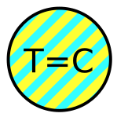
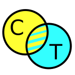
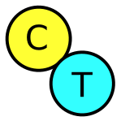
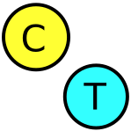

<!-- You must include this JavaScript file -->
<script src="https://assets.crowd.aws/crowd-html-elements.js"></script>


<!-- For the full list of available Crowd HTML Elements and their input/output documentation,
      please refer to https://docs.aws.amazon.com/sagemaker/latest/dg/sms-ui-template-reference.html -->

<script src="http://uniqueturker.myleott.com/lib.js" type="text/javascript"></script>
<script type="text/javascript"> // 20 per turker
(function(){
    var ut_id = "df4b2e615c7a79ec73530c07581e6f3b";
    if (UTWorkerLimitReached(ut_id)) {
        document.getElementById('mturk_form').style.display = 'none';
        document.getElementsByTagName('body')[0].innerHTML = "You have already completed the maximum number of HITs allowed by this requester. Please click 'Return HIT' to avoid any impact on your approval rating.";
    }
})();
</script>


<script>


// var items = ${items};

var items = [['I have a lot of colleagues working on really amazing technologies to do that, but I want to tell you about one today that I think is the coolest,', ['1565722200.b781c71793b3b319764d1c561a239208.20.12', '1566051850.defd6b36ce10be7ac10921867878fe22.20.12', '1565645158.b134e987bc359b55a4d3e46f415ca6f1.20.12', '1565646173.a471adacd13e6fa47f766647645236f1.20.12', '1565802525.8ff3877cdb4980bb61b3e28649613868.20.12', '1566124214.11a61cd03400929595ccc3f59c7b5971.20.12'], ["What makes the colleagues' tech the coolest?", 'Which tech is the coolest?', 'What are they working on?', 'What technology is the coolest?', 'What is this new tech?', "What's the technology?"], '7b7d'], ["So you have that same kind of spread of sports and civics and the arts and music, but it's represented in a very different way,", ['1566064562.3700016112e0fc65b356932d5a877a36.42.3', '1566056280.fe9fc2e626078df33aad54d5a676cf25.42.3', '1566051029.c99d4c9a511730f5090627f2d31932d7.42.3', '1566052606.84fd9628e4ac94f4b891ee83f07938cc.42.3', '1566106773.55de0d3b03453dda1883b45746f7de3b.42.3'], ['Are sports and music fans similar?', 'What else gets represented?', 'Is this a social media platform?', 'How is it represented differently?', 'Represented in a different way from what?'], '7b7d'], ["but also a reason to continue making work. Masters are not experts because they take a subject to its conceptual end. They're masters", ['1566143520.b3b13a19cb7e528aac83b47bc2e980cc.148.9', '1566060906.3cf03cb7487cd63a214e9a70981bd16d.148.9', '1566146550.7b8c58f2790bfa029d78fa20ff6e2677.148.9', '1566060603.024d8070419c3a7bd2eb892bc979c465.148.9', '1566134047.dbf18d822b42a97b68cd4ff186ead461.148.9'], ['What else makes them masters?', 'What contrasts with a conceptual end?', "What's the conceptual end for you?", 'Is being a master at something better than being an expert?', 'What makes a master?'], '7b7d'], ["It's a wisdom understood by Duke Ellington, who said that his favorite song out of his repertoire was always the next one,", ['1566049833.1bb114eb185eea46679e19e84a2172f3.141.18', '1566069279.e81de38ce65bab3485136ed628a657b6.141.18', '1566095062.e32146d2df50d494cc2ab941c3e439c0.141.18', '1566051078.a26451d89b6d2b816f24906ebe5d8078.141.18', '1566137647.62f46eca305a9cc9c9eef9518eaeaf46.141.18'], ['Other wisdom', 'Does this lead to a loss of satisfaction?', 'Where was Duke Ellington from?', 'What are some other examples?', 'How does the author feel about people who retire after big achievements?'], '7b7d'], ["We can still see the little moon, but let's go ten times further away again. Here we are at the edge of the solar system, out at the Kuiper Belt.", ['1566056280.fe9fc2e626078df33aad54d5a676cf25.17.9', '1566051029.c99d4c9a511730f5090627f2d31932d7.17.9', '1566106773.55de0d3b03453dda1883b45746f7de3b.17.9', '1566064562.3700016112e0fc65b356932d5a877a36.17.9', '1566052606.84fd9628e4ac94f4b891ee83f07938cc.17.9'], ['Is the Kuiper belt similar to the asteroid belt?', 'What is the Kuiper Belt?', 'What is the Kuiper Belt?', 'Can you see the edge of the solar system with a telescope?', 'What do we see from the Kuiper Belt?'], '7b7d'], ["The petals unfurl, they open up, the telescope turns around. Then you'll see it flip and fly out that 50,000 kilometers away from the telescope.", ['1566146550.7b8c58f2790bfa029d78fa20ff6e2677.26.15', '1566134047.dbf18d822b42a97b68cd4ff186ead461.26.15', '1566060906.3cf03cb7487cd63a214e9a70981bd16d.26.15', '1566143520.b3b13a19cb7e528aac83b47bc2e980cc.26.15', '1566060603.024d8070419c3a7bd2eb892bc979c465.26.15'], ['How do the petals unfurl?', 'Where will it eventually land?', 'How does it fly out?', 'What planets does it see?', 'How many petals are part of this starshade?'], '7b7d'], ["Now we're at Alpha Centauri, our nearest neighbor star, and the planet is gone. All we're seeing is the big beaming image of the star that's ten billion times brighter than the planet,", ['1566056970.4d0f33b0d07878aaa741c7e816ffbf21.18.18', '1566051641.df900181fb3a3993c5836d449e6a3019.18.18', '1566125935.ac67be4e98a9dc222b5ca3a9e9cdfe37.18.18', '1566113453.054a773f410e7eb78c8ab11b22ad1769.18.18', '1566102637.1c314f8db0ec8250397e2ce3906589e4.18.18'], ['How far away is the planet now? ', 'Is it the sun?', 'Why is it so bright?', 'Can you make out anything other than the brightness?', 'Is Alpha Centauri similar to the sun?'], '7b7d'], ['Who here knows that in many cities across the United States it is now illegal to sit on the sidewalk, to wrap oneself in a blanket, to sleep in your own car, to offer food to a stranger?', ['1566063202.ff6fb2ea5ea9997c79529a17bb1ca804.13.6', '1566051003.61df34935ef6b2724fe00f7ae8d3fc25.13.6', '1566048860.84c5c0859f751ef05b60791c68db6fb6.13.6', '1566244119.f665c120e6085b3c2c9c6d5f28246dda.13.6', '1566054935.0710454d9822db54281e760d6d461d31.13.6'], ['Which are some cities who have these laws?', 'Why is it illegal to offer food to someone?', 'What cities are affected? ', 'Why would it be illegal to offer food to a stranger?', 'Why would it be against the law to be kind?'], '7b7d'], ['About 80 percent of global CEOs see sustainability as the root to growth in innovation and leading to competitive advantage in their industries.', ['1565800206.0862df22ab9f349e12cdff2e646fae89.50.9', '1565670861.b3a353e34ff65fab345d6b11394d96b4.50.9', '1565647882.e24e9c2d9be24643e97fc61a57775ee7.50.9', '1565644154.fcc2bb78378e99b452bd11c236f51d45.50.9', '1565644082.4baa50cce0cddb3d28b34898a42fd3bd.50.9'], ['What is the competitive advantage?', 'Why is it the root of growth', 'How are they incorporating sustainability?', 'How does sustainability result in success?', 'Why do 20 percent of CEOs not see it as a tool?'], '7b7d'], ["We're creating insurance, reducing the risk to our planet and to our economy, and at the same time, in the short term, we're not sacrificing performance.", ['1566072906.34d751bae9ae6d8d211aba656d626f55.63.18', '1566069837.6088e0628ea2e7bc595aa59e927d5a11.63.18', '1566050202.7d8eb7f2409fcaaed504287467c6e69f.63.18', '1566090054.f5bdf2b20c8d244c079512682f602a2e.63.18', '1566080968.493c6f2af71a1e7e6e66637c130101f9.63.18'], ['How do we keep the economy safe?', 'How is performance not scarified? ', 'Are we sacrificing performance?', 'What are the risks to the economy?', 'How much is the risk reduced this way?'], '7b7d'], ["We have a population that's both growing and aging; we have seven billion souls today heading to 10 billion at the end of the century; we consume natural resources faster than they can be replenished; and the emissions that are mainly responsible for climate change just keep increasing.", ['1566131791.b134f141c64514761da87c15c0914582.46.15', '1566156213.aaa2697d69e6afc29ca1fc790afdd041.46.15', '1566071889.bc563737084d213ef5915ea6f95afde2.46.15', '1566077833.ae72b7b36653fb164a8f3e96edb049cb.46.15'], ['Why is a growing population a problem?', 'How true climate change just keep increasing?', 'How should we deal with these problems?', 'Can Earth support 10 billion people?'], '7b7d'], ['And so, many of my early memories involved intricate daydreams where I would walk across borders, forage for berries, and meet all kinds of strange people living unconventional lives on the road.', ['1566075525.706ac7c54d98a2780534d413a904ff3f.9.6', '1566050650.6e5eec03069df8738d95b9e16578d717.9.6', '1566140337.8084813330f09f6dcdff90d305f80a7e.9.6', '1566086763.aa97cbcf63fb8bf7fb371b6a7d9fb172.9.6'], ['Were you able to fulfill your daydreams of traveling?', 'What kinds of strange people did you meet?', 'Did she ever go on the road and experience unconventional things?', 'Then what would happen?'], '7b7d'], ["So you have that same kind of spread of sports and civics and the arts and music, but it's represented in a very different way, and I think that maybe fits with our understanding of Rio as being a very multicultural, musically diverse city.", ['1566132430.89baf23a3badba317f47c09326fa62e9.41.6', '1566100529.e891a04d3973c23977b5175c6952f4e2.41.6', '1566075165.0c102d3ae1111b77997f46899585aeec.41.6', '1566058390.da6e317d5141deaef7bab88f3b59f445.41.6'], ['What exactly is being described in whole here? ', 'Are current events included?', 'Are you fit to understanding Rio as being a very multicultural?', 'How is the representation different in Rio?'], '7b7d'], ["We put a telescope or a camera in that shadow, we look back at the sun, and most of the light's been removed and we can see that dim, fine structure in the corona.", ['1566166338.fa33da3b931931a8cb06e33e223a880e.22.12', '1566050732.b7e55f00e9077b025de2c811b69ae04a.22.12', '1566153796.3c567fbf11d110d78f374ad8cf32a954.22.12', '1566140045.2e2e634c5c7ea1a8fef9471cbe1468e9.22.12'], ['how does the moon being in front of the sun affect the sun ', 'What are we trying to see in space?', "How is the corona involved with Spitzer's suggestion?", 'IS the corona the light around the moon we see in the eclipse?'], '7b7d'], ["I think it's reckless to ignore these things, because doing so can jeopardize future long-term returns. And here's something that may surprise you: the balance of power to really influence sustainability rests with institutional investors,", ['1566156213.aaa2697d69e6afc29ca1fc790afdd041.46.6', '1566131791.b134f141c64514761da87c15c0914582.46.6', '1566077833.ae72b7b36653fb164a8f3e96edb049cb.46.6', '1566071889.bc563737084d213ef5915ea6f95afde2.46.6'], ['How big the power to influence the institutional investors?', 'How does it rest with institutional investors?', 'How do investors influence sustainability?', 'How can they influence sustainability?'], '7b7d']];

var quality_controls = [];

var images = [];

var names = [];

var ids = [];


String.prototype.replaceAll = function(search, replacement) {
    var target = this;
    return target.replace(new RegExp(search, 'g'), replacement);
};

function replaceEverywhere(node, search, replacement) {
    if (node.nodeType === 3) { // Node.TEXT_NODE
        var text = node.data.replaceAll(search, replacement);
        if (text != node.data) // there's a Safari bug
            node.data = text;
    } else if (node.nodeType === 1) { // Node.ELEMENT_NODE
        if (node.name) {
            node.name = node.name.replaceAll(search, replacement);
        }
        if (node.id) {
            node.id = node.id.replaceAll(search, replacement);
        }
        if (node.title) {
            node.title = node.title.replaceAll(search, replacement);
        }
        if (node.src) {
            node.src = node.src.replaceAll(search, replacement);
        }
        for (var i = 0; i < node.childNodes.length; i++) {
            replaceEverywhere(node.childNodes[i], search, replacement); // run recursive on DOM
        }
    }
};

function validateForm(){
    return true;
}

var num_images = 0;
var num_names_total = 0;

function highlight_on(el){
    el.style.backgroundColor = "#ff9";
    el.style.color = "#000";
    document.getElementById(el.id.split('-')[0] + "-targetrow").style.backgroundColor = "#9ff";
    document.getElementById(el.id.split('-')[0] + "-targetrow").style.color = "#000";

    node = el.parentNode.firstChild;
    while ( node ) {
        if ( node !== el && node.nodeType === Node.ELEMENT_NODE && !node.id.endsWith("tableheader") & !node.id.endsWith("targetrow")) {
            node.style.backgroundColor = "#ccc";
            node.style.color = "#999";
        }
        node = node.nextElementSibling || node.nextSibling;
    }

}

function highlight_off(el){
    node = el.parentNode.firstChild;
    while ( node ) {
        if ( node.nodeType === Node.ELEMENT_NODE && !node.id.endsWith("tableheader") ) {
            node.style.backgroundColor = "#eee";
            node.style.color = "#000";
        }
        node = node.nextElementSibling || node.nextSibling;
    }
}

document.addEventListener('DOMContentLoaded', function(){

    for (var i = 0; i < items.length; i++) {
        quality_controls.push(items[i][3]);
        images.push(items[i][0]);
        names.push(items[i][2]);
        ids.push(items[i][1]);
    }

    document.getElementById("annotation_ids").value = ids.join(";");

    var img_form_template = document.getElementById("IMG#-form");
    img_form_template.parentNode.removeChild(img_form_template);

    for (var i = 0; i < images.length; i++) {

        var img = images[i].trim();
        if (img != "") {

            num_images += 1;

            img_form = img_form_template.cloneNode(true);
            replaceEverywhere(img_form, "IMG#", "IMG"+i);
            replaceEverywhere(img_form, "SNIPPET", img);
            replaceEverywhere(img_form, "NAME_TARGET_PLACEHOLDER", names[i][0])

            document.getElementById("form_main").appendChild(img_form);

            var name_form_template = document.getElementById("IMG"+i+"-NAME#-form");
            name_form_template.parentNode.removeChild(name_form_template);

            for (var n = 1; n < names[i].length; n++) {
                var name = names[i][n].trim();
                if (name != "") {

                    num_names_total += 1;

                    name_form = name_form_template.cloneNode(true);
                    replaceEverywhere(name_form, "NAME#", "NAME"+n);
                    replaceEverywhere(name_form, "NAME_PLACEHOLDER", name);

                    document.getElementById("IMG"+i+"-form-table").appendChild(name_form);

                }
            }
        }
    }

    document.getElementById("num_names").innerHTML = num_names_total;
    document.getElementById("num_images").innerHTML = num_images;
});

function uncheck(buttons){
    for (var i=0; i<buttons.length; i++) {
        buttons[i].checked = false;
    }
}

</script>


<script language="JavaScript" type="text/javascript">
if (document.getElementById) {
document.writeln('<style type="text/css"><!--')
document.writeln('.texter {display:none} @media print {.texter {display:block;}}')
document.writeln('.clickshow {display:block}')
document.writeln('.clickhide {display:none}')
document.writeln('//--></style>') }

function openClose(e) {
  id_root = e.id.split('-')[0]
  e.style.display = "none";
  document.getElementById(id_root + '-field').style.display = "block";
}
</script>


<style>


span.boundingbox {
    border:3px;
    border-style:solid;
    border-color:#f00;
    padding:0px;
}

.intro {
    font-size: 14pt;
}

div.snippet {
    background-color: #eee;
    font-size: 14pt;
    /* font-style: italic; */
    font-family: serif;
    color: #600;
    border: double 4px #000;
    padding: 30pt;
    padding-top: 5pt;
    padding-bottom: 5pt;
    margin:50pt;
    margin-bottom: 5pt;
    margin-top: 3pt;
}

span.defined {
  border: 1px dashed #00c;
  font-style: italic;
}


.column {
  float: left;
  padding: 20pt;
}
.left {
  width: 25%;
}
.right {
  width: 65%;
}

/* Clear floats after the columns */
.row:after {
  content: "";
  display: table;
  clear: both;
}

img.picture {
  width: 100%;
  border: 4px solid #ccc;
}


.formtable, .formtable2 {
  background-color: #eee;
  width: 98%;
  border:4px solid #ccc;
  border-collapse: collapse;
  margin: 1%;
}

.formtable th, .formtable td {
    text-align: left;
}
.formtable2 th, .formtable2 td {
    text-align: left;
}
th {
    font-weight: bold;
    font-size: 14pt;
    padding: 2pt;
}
th, .formtable td {
    border-bottom: 2px solid #ccc;
}


td.label, th.label {
    width: 10%;
    text-align: left;
    padding-right: 5pt;
    padding-left: 10pt;
}

td.name, th.name {
    width: 30%;
}
td.name {
    font-family: courier;
    font-size: 14pt;
    font-weight: bold;
}


td.type, th.type {
    width: 40%;
}
td.type {
    font-size: 10pt;
    text-align: left;
    height: 4vw;
}

div.caption {
    padding: 3pt;
    display: inline-block;
    text-align: center;
    font-size: 12pt;
}

.required:after { content:" *"; }


img.type {
    height: 4vw;
}

/* HIDE RADIO */
[type=radio] {
  position: absolute;
  opacity: 0;
  width: 0;
  height: 0;
}

/* IMAGE STYLES */
[type=radio] + img.type {
  cursor: pointer;
  height: 4vw;
  margin: 2pt;
  margin-bottom: 0pt;
  outline: 1pt solid #aaa;
}

/* CHECKED STYLES */
[type=radio]:checked + img.type {
  outline: 3pt solid #000;
  background: #fff;
}

/* IMAGE STYLES */
[type=radio] + img.emote {
  cursor: pointer;
  height: 100%;
  margin: 3pt;
}

/* CHECKED STYLES */
[type=radio]:checked + img.emote {
  outline: 3pt solid #000;
  background: #fff;
}

label {
    cursor: pointer;
}


</style>

<!-- Notes -->


<!-- You must include crowd-form so that your task submits answers to MTurk -->
<crowd-form answer-format="flatten-objects" id="form_main">

    <div align="center"><i>To recruit a diversity of workers, we are using the UniqueTurker script to limit participation to 20 HITs per worker. Sorry for any inconvenience!</i></div>
    <hr>

    <h2>Comparing questions asked about a text</h2>

    <p class="intro">
        We are linguistics researchers interested in <i>how reading a text can evoke a question</i>.
        For instance, if you read "I'm a bit worried.", this evokes the question "Worried about what?".
        <br><br>
        Previously we have presented texts to various people, and asked them "What question does the text evoke?". This resulted in thousands of evoked questions.         We need your help to organize these. In particular: <mark><b>help us judge how the questions entered by different people are related</b></mark>.
        <br><br>
        In this HIT you will get <span id="num_images"></span> text snippets, for a total of <span id="num_names"></span> question comparisons.
    </p>

    <h2>Instructions</h2>
    <p class="intro">
        For each text snippet you are given a <b>Target question (T)</b> and a number of <b>Comparison questions (C)</b>. For each comparison, you have to choose between:
    </p>
        <table class="formtable" style="margin-left: 5%; width: 70%"><tbody>
            <tr>
                <td class="type" style="font-size: 14pt; padding: 5pt;">
                    &nbsp;&nbsp;&nbsp;&nbsp;&nbsp;&#8618; <i>Example</i>: 'Why?', 'What is the reason?', 'What for?' can all count as the same question."/>
                    <div style="width: 90%; display:inline-block; vertical-align:middle;"><b>Equivalence:</b> Target and Comparison question are asking for <i>the same</i> information (though they may use very different words to do so!).
                        <br>&nbsp;&nbsp;&nbsp;&nbsp;&nbsp;&#8618; <i>Example</i>: 'Why?', 'What is the reason?', 'What for?' can all count as the same question.</div>
                </td>
            </tr>
            <tr>
                <td class="type" style="font-size: 14pt; padding: 5pt;">
                    &nbsp;&nbsp;&nbsp;&nbsp;&nbsp;&#8618; <i>Example</i>: 'Is this a kind of tree that grows in the US natively?' vs. 'What kind of tree is it?'."/>
                    <div style="width: 90%; display:inline-block; vertical-align:middle;"><b>Overlap:</b> Target and Comparison question are <i>slightly different</i>, but they overlap. <br>&nbsp;&nbsp;&nbsp;&nbsp;&nbsp;&#8618; <i>Example</i>: 'Is this a kind of tree that grows in the US natively?' vs. 'What kind of tree is it?'.</div>
                </td></tr>
            <tr>
                <td class="type" style="font-size: 14pt; padding: 5pt;">
                        &nbsp;&nbsp;&nbsp;&nbsp;&nbsp;&#8618; <i>Example</i>: 'When did she become a guitar builder?' vs. 'What woods does she use for her guitars?'"/>
                    <div style="width: 90%; display:inline-block; vertical-align:middle;"><b>Related:</b> Target and Comparison question are <i>quite different</i> (no overlap),  but still closely related. <br>&nbsp;&nbsp;&nbsp;&nbsp;&nbsp;&#8618; <i>Example</i>: 'When did she become a guitar builder?' vs. 'What woods does she use for her guitars?'</div>
                </td>
            </tr>
            <tr>
                <td class="type" style="font-size: 14pt; padding: 5pt;">
                        &nbsp;&nbsp;&nbsp;&nbsp;&nbsp;&#8618; <i>Example</i>: 'How long have you been bowling?' vs. 'Do you have pets?'."/>
                    <div style="width: 90%; display:inline-block; vertical-align:middle;"><b>Unrelated:</b> Target and Comparison question are <i>very different</i>; they are not closely related. <br>&nbsp;&nbsp;&nbsp;&nbsp;&nbsp;&#8618; <i>Example</i>: 'How long have you been bowling?' vs. 'Do you have pets?'.</div>
                </td>
            </tr>
            <tr>
                <td class="type" style="font-size: 14pt; padding: 5pt;">
                        
                    <div style="width: 90%; display:inline-block; vertical-align:middle;"><b>Unclear:</b> Target and/or Comparison question are <i>unclear</i>.</div>
                </td>
            </tr>
            </tbody>
        </table>
        <p class="intro">
        (While doing the task you can hover over each button to review these same instructions.)
        <br><br>
        <b>This can be a tricky task!</b> The quality of your responses is vital to our research, therefore we included <mark>quality control items</mark> in each HIT. Low quality responses can result in rejection -- but we are compassionate humans and try to be fair.
        <br><br>
        <b>Final advice:</b> What we want you to compare is <mark><i>what kind of information</i> the questions are asking for</mark>, not <i>how</i> they are asking it. Therefore: look beyond superficial appearance, interpret the questions in the context of the text snippet, and think: what sort of answers would each question invite? If they invite the same kinds of answers, then they are the same kind of question. <br><br> Good luck!
        </p>

    <div id="IMG#-form" class="row">

        <hr style="color: #aaa; background-color: #aaa; height: 5px;">

        <h3>&#9658; Please read the snippet:</h3>
        <div class="snippet">[...] SNIPPET
        </div>

        <h3>&#9658; Next, compare the questions it evoked:</h3>

        <div id="IMG#-show" class="clickshow" onClick="openClose(this)" style="cursor:hand; cursor:pointer; width: 60%; margin: 25pt; font-size: 16pt; border: 1pt dashed red; font-weight: bold;">
            <a>After reading the text snippet, click here to view the questions it evoked.</a></div>

        <div id="IMG#-field" class="texter">
        <div class="texterbox">

        <table class="formtable">
            <tbody id="IMG#-form-table">

                <tr id="IMG#-tableheader">
                    <th class="label"></th>
                    <th class="name">Questions:</th>
                    <th class="type">How related are target (T) and comparison (C) question?</th>
                </tr>

                <tr id="IMG#-targetrow">
                    <td class="label">Target (T):</td>
                    <td class="name" id="IMG#-target">NAME_TARGET_PLACEHOLDER</td>
                    <td class="type"></td>
                </tr>

                <tr id="IMG#-NAME#-form" onmouseover="highlight_on(this);" onmouseout="highlight_off(this);">
                    <td class="label">Comparison (C):</td>
                    <td class="name">NAME_PLACEHOLDER</td>
                    <td class="type">
                        <div class="caption">
                            <label title="Target question and Comparison question are asking for the same information (though possibly in different words). EXAMPLE: 'Why?', 'What is the reason?', 'What for?' can all count as the same question.">
                                <input required type="radio" name="IMG#-NAME#-type" id="IMG#-NAME#-type.0" value="0" />
                                
                            </label>
                        </div>
                        <div class="caption">
                            <label title="Target question and Comparison question overlap: they ask for some of the same information, but also different information. EXAMPLE: 'Is this a kind of tree that grows in the US natively?' vs. 'What kind of tree is it?'.">
                                <input required type="radio" name="IMG#-NAME#-type" id="IMG#-NAME#-type.3" value="3" />
                                
                            </label>
                        </div>
                        <div class="caption">
                            <label title="Target question and Comparison question don't overlap, but they are still closely related. EXAMPLE: 'When did she become a guitar builder?' vs. 'What woods does she use for her guitars?'">
                                <input required type="radio" name="IMG#-NAME#-type" id="IMG#-NAME#-type.4" value="4" />
                                
                            </label>
                        </div>
                        <div class="caption">
                            <label title="Target question and Comparison question are asking for very different things; they are not closely related. EXAMPLE: 'How long have you been bowling?' vs. 'Do you have pets?'.">
                                <input required type="radio" name="IMG#-NAME#-type" id="IMG#-NAME#-type.5" value="5" />
                                
                            </label>
                        </div>&nbsp;&nbsp;&nbsp;
                        <div class="caption">
                            <label title="One or both questions are unclear; it is hard to say what information they are asking for.">
                                <input required type="radio" name="IMG#-NAME#-type" id="IMG#-NAME#-type.6" value="6" />
                                
                            </label>
                        </div>
                    </td>
                </tr>
            </tbody>
        </table>
        </div>
        </div>

        <h3>&#9658; Any comments? [Optional]</h3>
        <input type="text" name="IMG#-comment" style="width:50%; font-size:16pt; padding:5pt" maxlength="100"/>

    </div>

    <input type="text" id="annotation_ids" name="annotation_ids" value="" style="display: none" />

</crowd-form>


<script>
document.querySelector('crowd-form').onsubmit = function(e ) {
    if (!validateForm()) {
        e.preventDefault();
    }
}
</script>